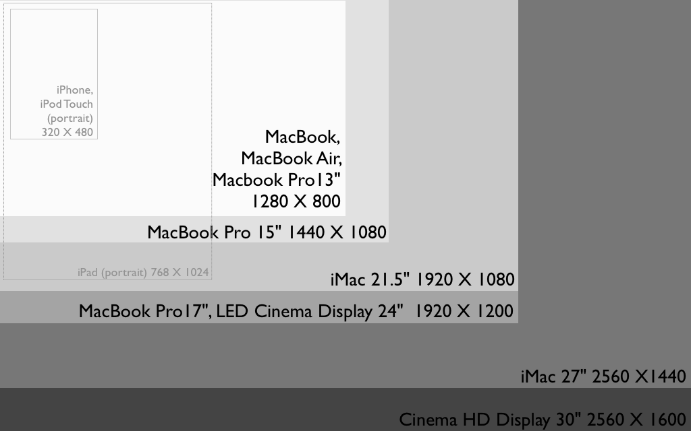

class: center, middle # The state of responsive images on the web --- ## What are responsive images? * Making images fit at different resolutions. * Possiby swapping images out for different ones depending on these criteria. --- ## Why would you swap images? * For art direction reasons. * To save bytes. --- class: center, middle # Let's recap what you can already do today --- ## How do you make any image fit its container? ```html <img src="photo.jpg" alt="a photo of me in high school" width="640" height="480"> ``` ```css img { max-width: 100%; height: auto; /* if you want to scale up */ width: 100%; /* or if you want to rather center */ margin-left: auto; margin-right: auto; } ``` --- ## How do you swap background images? ```html <div class="cover"><h1 class="profile-name">Le Roux Bodenstein</h1></div> ``` ```css /* mobile first */ .cover { background-image: url(small-cover-image.png); background-size: cover; } @media screen and (min-width: 320px;) { .cover { background-image: url(big-cover-image.png); } } ``` ```css /* fixed width / IE-compatible first */ @media screen and (max-width: 320px;) { .cover { background-image: url(small-cover-image.png); } } .cover { background-size: cover; background-image: url(big-cover-image.png); } ``` --- ## What about retina screens? ```css .cover { background-image: url(cover-image.jpg); } /* the old/initial webkit way */ @media screen and (-webkit-min-device-pixel-ratio: 2) { .cover { background-image : url(cover@2x.png); } } /* the newer, standards-compliant way */ @media screen and (min-resolution: 2dppx) { .cover { background-image : url(cover@2x.png); } } ``` --- class: center, middle # Next up: srcset and picture (Much more in depth than I'm about to go into: http://responsiveimages.org/) --- ## srcset attribute ### OMG RETINA DISPLAYS ```html <img src="fallback.jpg" alt="" srcset="photo.jpg 1x, photo-hd.jpg 2x"> ``` ### more full featured ```html <img src="fallback.jpg" alt="" srcset="photo.jpg, photo-hd.jpg 640w 480h"> ``` --- ## max width or min width? The browser performance people won. It is really confusing. Please don't use it. See this link if you're interested: http://blog.cloudfour.com/the-real-conflict-behind-picture-and-srcset/ --- ## picture element ```html <picture> <source media="(min-width: 40em)" srcset="big.jpg 1x, big-hd.jpg 2x"> <source srcset="small.jpg 1x, small-hd.jpg 2x"> <img src="fallback.jpg" alt=""> </picture> ``` *sigh*. srcset again. ```html <picture> <source media="(min-width: 600px)" src="big.jpg"> <source src="small.jpg"> <img src="fallback.jpg" alt=""> </picture> ``` (Bitmaps aren't sized in ems. They are sized in pixels, damnit.) --- class: center, middle # Browser support? --- # srcset * Chrome 31 and up * Opera Mobile 21 and up * Chrome for Android 33 and up According to http://caniuse.com/srcset --- # picture * Blink / Chrome<br> Picture: ASSIGNED (in work)<br> srcset: IMPLEMENTED/SHIPPED (Chrome 34) * WebKit / Safari<br> Picture: UNCONFIRMED (not implemented)<br> srcset: IMPLEMENTED * Mozilla Firefox<br> Picture: ASSIGNED (but not implemented)<br> srcset: OPEN (but not implemented) * Microsoft Internet Explorer<br> Picture: UNDER CONSIDERATION<br> srcset: UNDER CONSIDERATION According to http://responsiveimages.org/ --- class: center, middle The technical part of my talk ends here because the situation around content images is just too depressing. --- class: center, middle # Thought experiment. --- class: center, middle # Suppose picture or srcset was already implemented in all browsers. --- class: middle * Which breakpoints would you choose? * How would you go about choosing them? * Can you justify your decision? * BONUS POINTS: How would the CMS interface for this work? --- class: center middle # A word on future compatibility --- class: center middle ## First I was like...  --- class: center middle ### ...but then I was like... --- class: center middle # Suppose you want to send different images for art direction. --- class: center middle # Suppose you want to save bytes. --- ## Graphs, maps, logos, icons, etc. should almost always be vectors. Use SVGs and fall back to jpgs or pngs at the fallback resolution. http://caniuse.com/svg --- ## Available bandwidth and screen resolution doesn't correlate as well as you might think. If you find that the image or the page is too big (in bytes) or the page takes too long to load, then that's probably true of all resolutions. --- ## Keep images clear and uncluttered and they will probably scale down well. If you find that the image becomes difficult to read (or see or make out) as the page scales down, then that's probably true of the image regardless of screen resolution. --- ## Keep the layout simple. Forget about 12 column grids, try to keep most of the page one column, go two or three for some rows of content where it makes sense. Then collapsing becomes easy and predictable and you won't often have "upscaling" problems. --- ## Don't put text in images Keep your text in HTML and it is easy to scale if you have to. --- ## Hypocrisy is the worst crime on the internet Don't worry too much about wasted pixels until you have taken care of every other optimisation. * Are your images properly compressed to begin with? * What about your HTML, CSS, JavaScript and fonts? * Is everything properly cached? * How fast does your page load? --- # Perfect world solution Use a progressive image format and allow browsers (and by extension users) to decide how much of an image to download. Tilting, zooming, switching to EDGE, getting the initial page rendered as quickly as possible, etc. all becomes possible then and the browser doesn't have to start downloading a new image from scratch every time conditions change. http://opensores.za.net/2012/responsive-images/